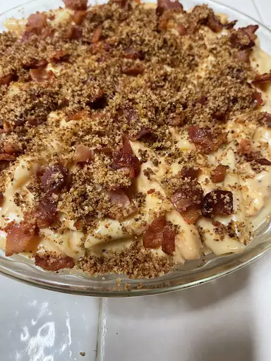

Mac and Cheese recipe

Homemade Mac and Cheese
This is a simple and quick recipe for the most delicious macaroni and cheese you've ever tasted!
Ingredients
- 1 package macaroni
- 1/4 cup butter
- 1/4 cup flour
- 1/2 teaspoon salt
- 2 cups milk
- 2 cups shredded Cheddar cheese
Directions
- Cook macaroni according to the package directions. Drain.
- In a saucepan, melt butter or margarine over medium heat. Stir in enough flour to make a roux. Add milk to roux slowly, stirring constantly. Stir in cheeses, and cook over low heat until cheese is melted and the sauce is a little thick. Put macaroni in large casserole dish, and pour sauce over macaroni. Stir well.
- Melt butter or margarine in a skillet over medium heat. Add breadcrumbs and brown. Spread over the macaroni and cheese to cover. Sprinkle with a little paprika.
- Bake at 350 degrees F (175 degrees C) for 30 minutes. Serve.
Back to My Recipes